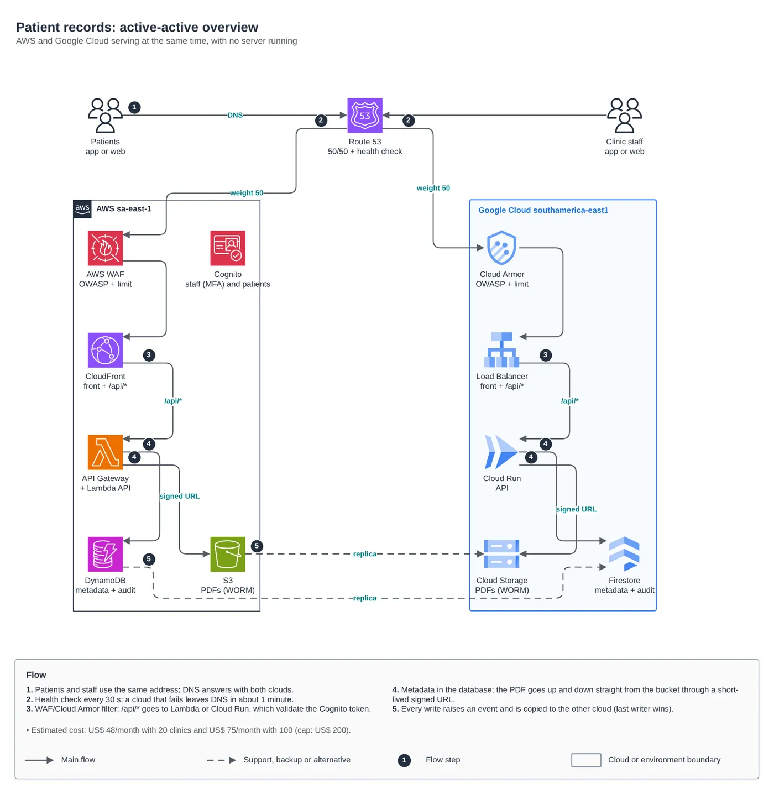
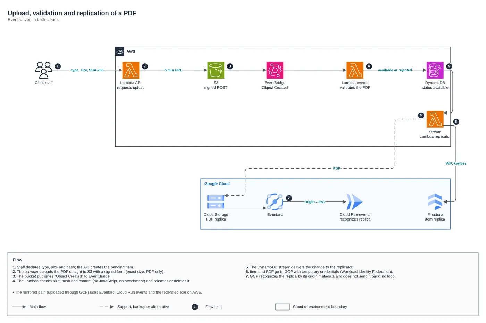
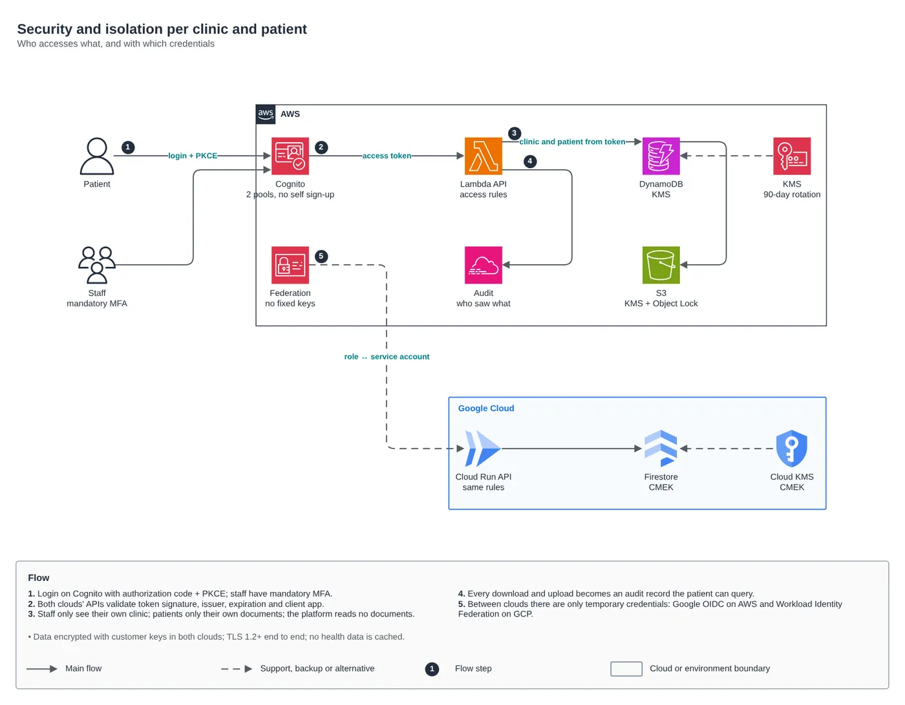

Multicloud · Challenge and solution
Active-active patient documents on AWS and Google Cloud
Challenge: exams, diagnoses and prescriptions as PDFs for 20 clinics today and 3,000 tomorrow, security first, under US$ 200 a month. Solution: serverless and event-driven, on both clouds at once.


01Problem
The ask: clinics store exams, diagnoses and prescriptions as PDFs, and each patient opens their own on a phone or in the browser, one click away. Today there are 20 clinics, and the goal is 3,000 without re-provisioning anything. Security is the main concern: health data is sensitive personal data under Brazil’s LGPD, each clinic may only see its own data and each patient only their own documents. The architecture had to be distributed, serverless and event-driven, on AWS and Google Cloud, and the cloud bill could not go over US$ 200 a month between 20 and 100 clinics.
02Solution
The same address is served by both clouds: Route 53 sends half of the traffic to each and removes from DNS, in about a minute, the one that fails its health check. On AWS, CloudFront with WAF in front of API Gateway, Lambda, DynamoDB and S3. On Google Cloud, a Load Balancer with Cloud Armor in front of Cloud Run, Firestore and Cloud Storage. Everything scales from zero, with data in São Paulo on both clouds. The PDF goes from the browser straight to the bucket through a signed URL; its arrival triggers validation, and DynamoDB Streams and Eventarc replicate every write to the other cloud, with last writer wins. There are no stored keys between the clouds: GCP reaches AWS through Google OIDC and AWS reaches GCP through Workload Identity Federation. Sign-in is single, on Cognito, with mandatory MFA for clinic staff.
The path of a document
- Clinic staff request an upload: the app saves the document as pending and returns a 5-minute signed URL that only accepts a PDF of the exact declared size.
- The browser sends the PDF straight to the bucket of the cloud that answered. The API never carries the file, which cuts cost and attack surface.
- The object-created event (EventBridge on AWS, Eventarc on GCP) checks size, SHA-256 and content, and blocks PDFs with JavaScript, launch actions, embedded files or XFA.
- Once approved, the document becomes available, and the record and the file are copied to the other cloud, without echoing back to the origin.
- The patient downloads through a 60-second signed URL, and every access becomes a record they can check themselves under "Who accessed my documents" (LGPD, art. 18).
Decisions and the price of each
- A single identity, on Cognito, because passwords do not migrate between providers. If the AWS region goes down, signed-in users keep working until their token expires, but new sign-ins stop meanwhile.
- Eventual consistency between clouds, within seconds. The write timestamp never goes backwards and a version number breaks ties between two writes in the same millisecond.
- Twenty-year retention for medical records (CFM Resolution 1,821/2007), with S3 Object Lock and a Cloud Storage retention policy, and customer-managed keys on both clouds.
- A problem that only shows up when you look at the whole design: the "Brazil only" rule in WAF and Cloud Armor blocked the Route 53 health check, which comes from the US, so both clouds would be marked as down. /api/health is now exempt from the geo rule.


The code
module "app" {
source = "git::https://github.com/Raphaelfcs/automacao_terraform.git//aws/route53-health-routing?ref=main"
providers = { aws = aws.us_east_1 }
zone_id = var.zona_dns_id
record_name = var.dominio_app
endpoints = {
aws = {
weight = var.peso_aws
alias = { name = local.aws_app.cloudfront_dominio, zone_id = "Z2FDTNDATAQYW2" } # zona fixa de toda distribuição CloudFront
health_fqdn = local.aws_app.cloudfront_dominio
}
gcp = {
weight = var.peso_gcp
ips = [local.gcp_app.lb_ip]
health_fqdn = var.dominio_app
health_ip = local.gcp_app.lb_ip
}
}
alarm_topic_arn = module.alertas.topic_arns["alertas"]
tags = local.tags
}03Discussion
Terraform modules used:
apps/docs-pacientesPatient records: active-active serverless app on AWS and Google Cloudaws/route53-health-routingActive-active cross-cloud DNS with health checksaws/waf-web-aclAWS WAF with managed rules and per-IP limitaws/dynamodb-tableOn-demand DynamoDB with stream, PITR and KMSaws/iam-role-gcp-federationKeyless IAM role for Google Cloud workloadsaws/cognito-user-poolCognito as OAuth2/OIDC IdPgcp/serverless-edgeGlobal edge: HTTPS LB, Cloud Armor and CDNgcp/cloud-run-serviceCloud Run with its own service account and NEGgcp/firestore-databaseNative Firestore with CMEK, PITR and backupsgcp/eventarc-triggerEventarc to a private Cloud Rungcp/workload-identity-awsWorkload Identity Federation AWS -> Google Cloud
FinOps: where the cost is
| Component | What drives cost | Lever |
|---|---|---|
gcp/serverless-edge + aws/waf-web-acl | Global Load Balancer, Cloud Armor, WAF, KMS keys and health checks: about US$ 45 a month, almost the whole bill up to 100 clinics. | It is the fixed price of active-active; compute and database scale from zero. |
aws/cognito-user-pool | At 3,000 clinics (324k monthly active users), sign-in becomes 85% of an estimated US$ 5.6k a month. | Lite tier (about US$ 1.7k less, with an English-only login page), a volume discount, or measuring real usage. |
apps/docs-pacientes/docs/custo.py | Estimated total: US$ 48 with 20 clinics and US$ 75 with 100, under the US$ 200 ceiling. | Assumptions at the top of the script: PDFs, downloads, patients and calls per clinic. |
November 2026 list prices for sa-east-1 and southamerica-east1, no discounts; the assumptions are in the cost script.